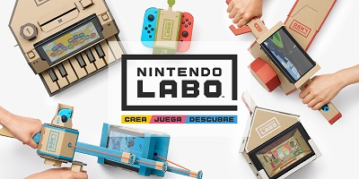
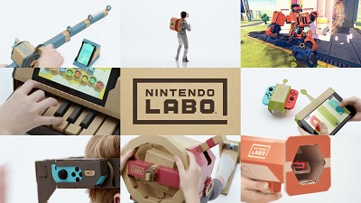
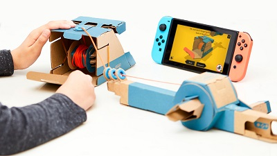

¿Valdrá la pena Nintendo Labo?

No cabe duda que Nintendo es una empresa que a veces acierta y a veces no, sin embargo, lo que siempre consigue hacer sin pestañear es sorprendernos. Durante la trayectoria que ha recorrido la gran N siempre ha conseguido mostrar propuesta que innovan o salen de los estándares que adoptamos para el medio en ese momento, y recientemente lo ha conseguido hacer de nuevo.
Todo comienza con una simple pieza de cartón capaz de convertirse en un automóvil, una moto, una caña de pescar, un piano en miniatura e incluso una mochila robot. Eso es lo que representa Nintendo Labo, la última propuesta de Nintendo, en la que básicamente se nos venden piezas de cartón para combinarlas con nuestro Nintendo Switch y así poder interactuar con algún juego de una forma bastante especial y creativa. Según lo declarado por la compañía "con Nintendo Labo la construcción es tan divertida como jugar".
Al parecer Nintendo está poniendo mucho esfuerzo y esperanza en este producto ya que las ventas del Nintendo Switch han ascendido como la espuma, por lo que la gran N espera que este novedoso producto este en varias casas donde este producto se encuentre conectado a una televisión.

Y aunque esto suene muy ambicioso por parte de Nintendo, curiosamente esto se puede llevar a cabo al menos en donde sea que que haya esta curiosa consola portátil y un niño que pueda disfrutarla, ya que Labo no es precisamente un producto para todo público poseedor de un Nintendo Switch. Al contrario del PlayStation 4 o el Xbox One, esta consola no busca competir por sus desempeños técnicos sino más bien en la polivalencia y la libertad del juego. Partiendo de este punto y teniendo al público infantil como principal punto focal para Labo, es que buscarán meter este ingenioso producto de cartón al mercado.
Además, la empresa con sede en Kioto hizo con Nintendo Labo un guiño a sus orígenes, ya que Nintendo empezó en 1889 como un fabricante de barajas Hanafuda, los tradicionales naipes japoneses. Y a pesar de que este aparentemente guiño al pasado e innovación poco ortodoxa pueda ser fuertemente criticable para algunos y un despropósito para otros, el anuncio de Nintendo Labo ha significado una estrategia muy interesante para la compañía, ya que en la bolsa de Tokio los inversionistas celebraron la propuesta con un alza de 2,36% de las acciones de Nintendo.
Desde ahorita ya se está anunciando que el valor neto que tendrá el paquete inicial para poder jugar con dicho periférico será de $70 dólares, cosa que ha causado una impresión muy fuerte en el público, misma que se ha traducido en muchos memes burlándose de lo ridículo que suena que Nintendo nos venda cartón por $70 dólares, pero debemos tener claro que Nintendo Labo no es solo un pedazo de cartón, es un producto confeccionado de manera profesional para poder armar estos elaborados modelos, acompañados de un juego con el que poder interactuar, ¡vaya!, como si se tratase de un juego con un periférico, sólo que en vez de ser de plastico, es de cartón de la más alta calidad.

Obviamente este es un producto enfocado en los niños, y para ese público infantil, Nintendo Labo representa, por lo pronto, una propuesta que no solo hace que los más pequeños se pongan a jugar, sino también exploren su imaginación en un mundo donde todos nos pasamos todo el tiempo viendo un pantalla. y bajo estas características y tomando en cuenta al público que va dirigido, sí que este curioso producto podría valer la pena.